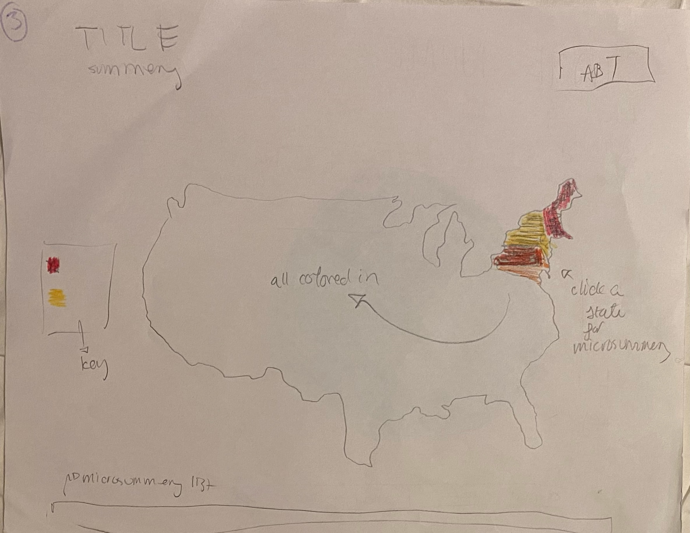
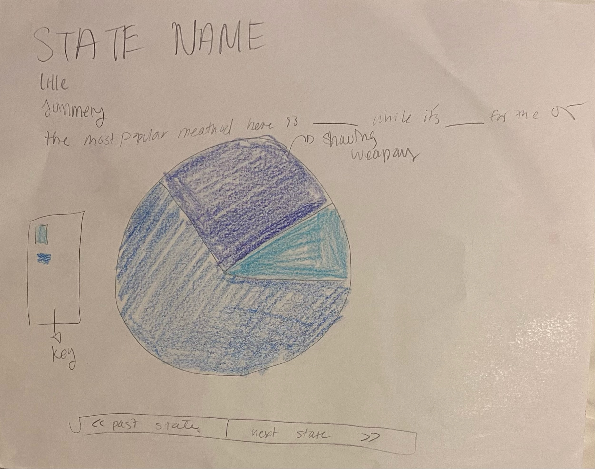
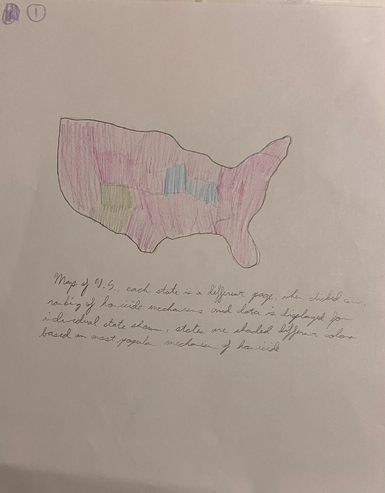
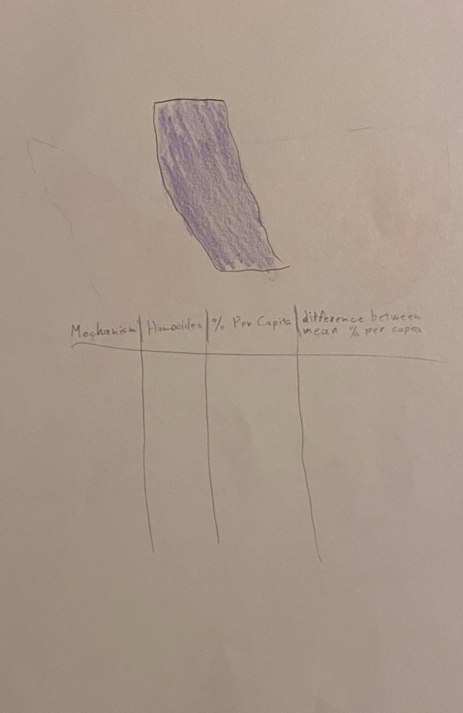

About Page
Useful Definitions
violent death:
mechanism of violent death:
Lo-Fi Wireframe Sketches + Analysis

Maia's Macro Sketch
- UNDERSTANDABILITY: This map is very understandable. It is clear that a darker color means a higher percentage of violent deaths in that location. The key adds to this understandability. The map doesn’t show, though, anything about the
mechanism used. This is only found in the individual state section. I think this is okay, though, because it helps not overwhelm the reader. In addition, the summery at the top will clear up any confusion.
- ACHIEVABILITY: Plotly allows you to show your data on a map of the US so this is achievable.
- SIGNIFIERS: The about button in the top right and the bar with a list of micro summery states make it clear that you can click these sections for other pages. It is not clear, though, whether you can click the states themselves. It will be
necessary to add a signifier there.
- MAPPINGS: It is clear that the page is mapping data on the percentage of deaths based on state to the US map.
- PERCEPTIBILITY: This layout is perceptible. Using shades rather than different colors make its it clear to even color blind users and the summery and title at the top allow blind users to use text to speech. It also does not overwhelm the
user with too much information (for example showing percentage and mechanism)

Maia's Micro Sketch
- UNDERSTANDABILITY: The pie chart is understandable, showing that bigger pieces of the pie relate to a higher percentage of that weapon used. The key makes the pie chart explicitly understandable as well by labeling the colors. In addition,
the sentence at the top of the page adds to this understandability. It might be interesting to try to contextualize this pie chart by comparing it to the frequency of violent deaths in the state as a whole to make the data more understandable.
- ACHIEVABILITY: D3 allows you to create pie charts and HTML allows you to create buttons and text
- SIGNIFIERS: It is clear that the buttons at the bottom of the page are clickable. It might be interesting to depict whether you can highlight each section of the pie chart in order to get more info about it.
- MAPPINGS: it is clear that the data about percentage of homicides by weapon is being mapped to a pie chart.
- PRECEPTIBILITY: The use of shades over different colors makes the pie chart perceptible to a colorblind person and the text at the top of the page makes it perceptible to a blind person through text to speech. It might be useful to use the
same colors as the US map to show that stuff corresponds, but also the blue might work as the US map is about number of deaths while this chart is about type of death.

Ryan's Macro Sketch
- UNDERSTANDABILITY: Hard to know what colors would mean. Definitely need a key to show what color represents what mechanism. Might not be that interesting because for most states, the most popular mechanism was a gun. The fact that the data
differs by location, though, is understandable due to the map. The data is all pretty visible and consistent.
- ACHIEVABILITY: Plotly allows you to show your data on a map of the US so this is achievable.
- SIGNIFIERS: not many signifiers showing if you can click anything. Perhaps add outlines to the states to show they are highlightable and clickable or hyperlinks in a description
- MAPPINGS: this was pretty successful in this example. Quite literally mapping mechanism based on location.
- PERCEPTIBILITY: This infographic isn’t perceptible to a blind user. Perhaps include a paragraph with descriptions to use text to speech. In addition, the use of different colors may be hard to understand by a colorblind user. Instead, maybe
color the map with different shades of the same color

Ryan's Micro Sketch
- UNDERSTANDABILITY: The use of both a colored map and a table seem really beneficial here. The map contextualizes the violent deaths in this location. It is hard to understand, though, what this color may represent so a key would be useful.
The table gives more data, allowing for a more interesting infographic than just a colored in state. All data is visible and you don’t need to click anything to access important info. The colors here are not consistent with the colors on the
landing page. It might make more sense to use the same colors. The page is simplistic and allows for readability.
- ACHIEVABILITY: Plotly allows you to depict data in states and HTML allows you to make a table
- SIGNIFIERS: there are no buttons on this sketch so the user doesn’t know if anything is clickable or how to interact with the page
- MAPPINGS: Here we are mapping the data about homicides to the map and the table. Both are clear, especially since the table is labeled. It might be beneficial to include a key to indicate what the color of the state maps to data-wise.
- PERCEPTIBILITY: This layout is very perceptible. There is only one color so it will be understandable by the colorblind and the table clearly labels all its data. The only issue that may arise with a table is that if it gets filled with too
much data, it can be overwhelming. This should not be an issue for this example, though, as there will be less than ten rows (because we only have data for less than ten mechanisms)
Final Design Elements
Based off of the evaluations above, we have decided to include the folliwng elements in our final design:
Macro Design
- The map from Maia's sketch because using shades instead of colors allows for accessability/perceptibility for colorblind people.
- It also means that the map will show amount of violent deaths rather than mechanism (as we will discuss mechnism for the micro page)
- The key from Maia's sketch as it makes the page more understandable.
- The paragraph from Ryan's sketch as it helps with understandability
- The buttons from Maia's sketch as they are great sigmifiers
- A highlight around each state that you hover over to signify that you can click on themselves
Micro Design
- The pie chart in Maia's sketch instead of the table in Ryan's sketch because it is more perceptible and more visual-based than word-based
- The colored-in state from Ryan's sketch because it provides context for the pie chart.
- A key for each of the diagrams.
- The buttons from Maia's sketch because they work as great signifiers.
- The paragraphs/titles from Maia's sketch because they make the page more understandable.
Project Pipeline
Division of Labor
-
Seeing as the project can be divided into three main parts: the macropage, the micropages, and the navbar, we currently believe an ideal way to distribute our work on these components is if Ryan focuses on the macropage, Maia focuses on the micropages, and together we collaborate on the navbar.